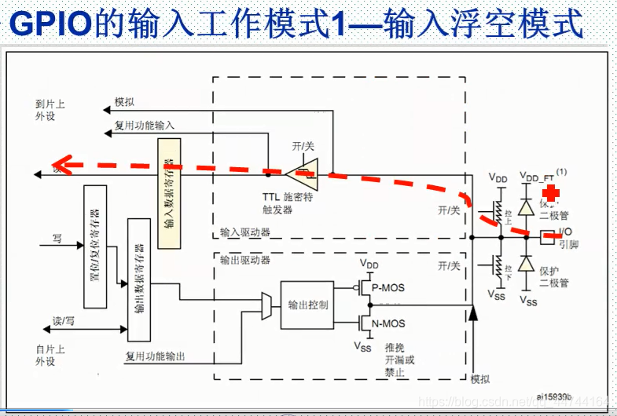
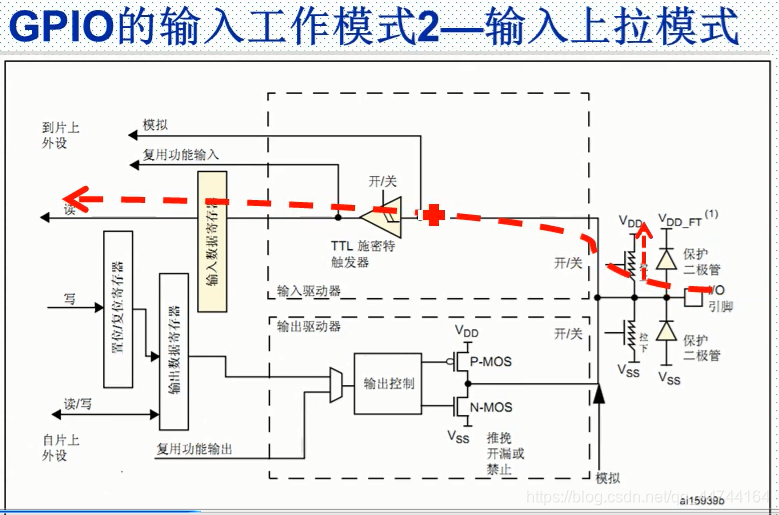
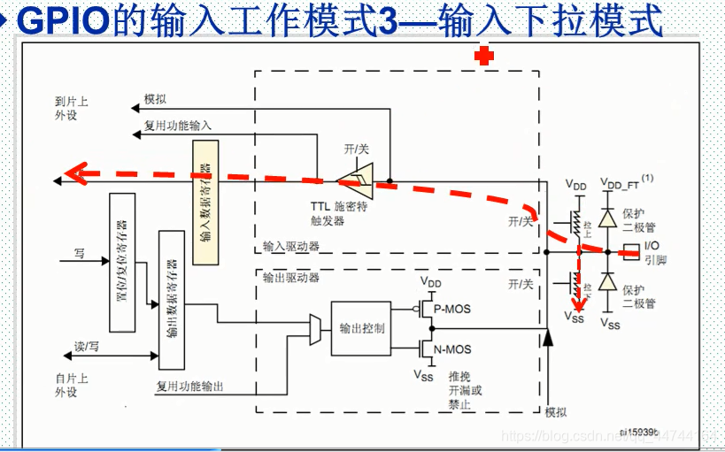
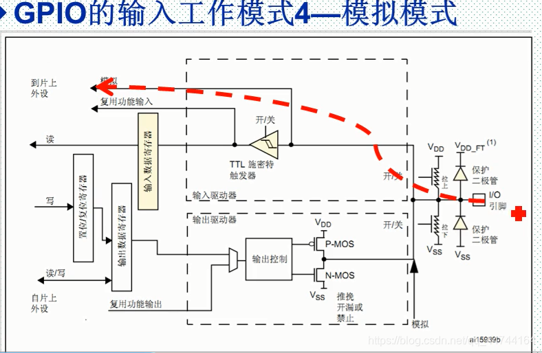
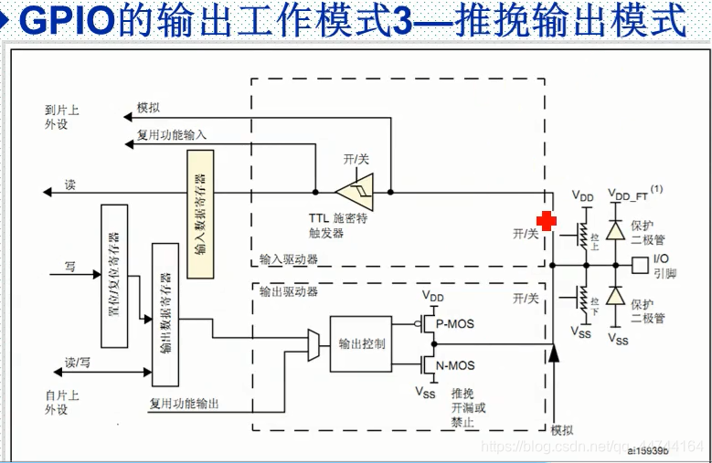
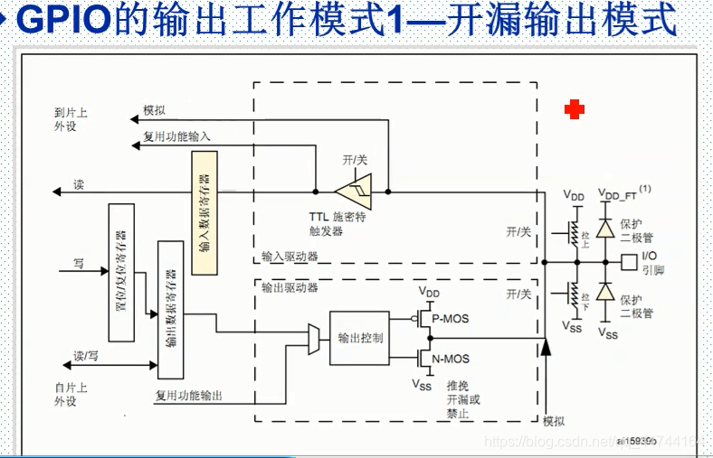

2024级电赛信号组
第二章 GPIO基础与应用
1. GPIO概念
引脚类型说明：
单片机上的引脚并非都是GPIO，常见引脚类型如下：
- GPIO引脚：通用输入输出，可编程控制高低电平，灵活性最高。
- 电源引脚：
- VCC/3V3：3.3V电源输出，可给外设供电，输出电流有限（通常几十mA）。
- 5V：5V电源输入，供电时可从此引脚输入。
- GND：地线，所有电路的公共参考地，必须连接。
- 复位引脚：NRST，用于芯片复位，低电平有效。
- 时钟引脚：OSC_IN、OSC_OUT，外接晶振提供主时钟。
- 调试引脚：SWDIO、SWCLK（或JTAG），用于程序下载与调试。
- 复用功能引脚：同一GPIO可复用为UART、SPI、I2C、定时器等功能。
2. GPIO工作模式与原理
STM32F103的GPIO共有8种工作模式，4种输入+4种输出：
一、输入模式（4种）
1. 浮空输入

原理分析：
- 内部无上拉、下拉电阻连接
- 输出驱动器被禁止，模拟和复用功能输入不起作用
- 施密特触发器输入被打开，CPU从输入数据寄存器读取IO口状态
- 引脚电平完全由外部输入决定，悬空时电平不确定
应用场景：通信协议接收端（如UART RX），外部必须有明确驱动。
2. 上拉输入

原理分析：
- 内部上拉电阻起作用，默认状态为高电平
- 输出驱动器被禁止，模拟和复用功能输入不起作用
- 施密特触发器输入被打开，CPU从输入数据寄存器读取IO口状态
- 外部输入低电平时，引脚被拉低；外部悬空时，保持高电平
应用场景：按键检测，按键一端接地，按下时输入低电平。
3. 下拉输入

原理分析：
- 内部下拉电阻起作用，默认状态为低电平
- 输出驱动器被禁止，模拟和复用功能输入不起作用
- 施密特触发器输入被打开，CPU从输入数据寄存器读取IO口状态
- 外部输入高电平时，引脚被拉高；外部悬空时，保持低电平
应用场景：按键检测，按键一端接VCC，按下时输入高电平。
4. 模拟输入

原理分析：
- 内部上拉、下拉电阻都不起作用
- 信号到达施密特触发器之前直接走模拟通道，不经过数字电路
- ADC采集IO口的电压信号，转换为数字量供CPU读取
- 数字输入电路关闭，功耗最低
应用场景：ADC采集模拟信号，如传感器电压读取。
二、输出模式（4种）
1. 推挽输出

原理分析：
- 输出数据寄存器写1时，P-MOS导通，N-MOS截止，IO口输出VDD（高电平）
- 输出数据寄存器写0时，N-MOS导通，P-MOS截止，IO口输出VSS（低电平）
- 驱动能力强，可输出高、低两种电平
- CPU可通过输入数据寄存器读取IO口电平状态
应用场景：最常用输出模式，如点亮LED、驱动继电器等。
2. 开漏输出

原理分析：
- 输出数据寄存器写1时，N-MOS截止，IO口呈高阻态（悬空），需外接上拉电阻才能输出高电平
- 输出数据寄存器写0时，N-MOS导通，IO口输出VSS（低电平）
- P-MOS管始终不工作，只能主动输出低电平
- CPU可通过输入数据寄存器读取IO口电平状态
应用场景：I2C通信、电平转换、线与逻辑。
3. 复用推挽输出
原理分析：
- 输出控制权交给片上外设（UART、SPI、TIM等），不再由ODR寄存器控制
- 内部电路结构与推挽输出相同，P-MOS和N-MOS交替导通
- 可输出高、低两种电平，驱动能力强
应用场景：UART TX、SPI MOSI/SCK、TIM PWM输出等。
4. 复用开漏输出
原理分析：
- 输出控制权交给片上外设，不再由ODR寄存器控制
- 内部电路结构与开漏输出相同，只有N-MOS工作
- 需外接上拉电阻才能输出高电平
应用场景：I2C SDA/SCL，支持双向通信和线与逻辑。
3. GPIO使用方法
3.1 CubeMX配置步骤：
- 在引脚图上点击目标引脚，选择GPIO模式
- 配置GPIO属性（上下拉、速度、标签等）
- 生成代码
3.2 HAL库常用函数：
// 写引脚电平
HAL_GPIO_WritePin(GPIOA, GPIO_PIN_5, GPIO_PIN_SET);
// 读引脚电平
HAL_GPIO_ReadPin(GPIOA, GPIO_PIN_0);
// 翻转引脚电平
HAL_GPIO_TogglePin(GPIOA, GPIO_PIN_5);
4. 实验
实验一：按键控制LED灯
- 硬件：STM32F103C8T6最小系统板、LED、按键
- 要求：按下按键点亮LED，松开熄灭
- 点击查看实验指导
实验二：软件模拟SPI读写
- 硬件：STM32F103C8T6最小系统板、SPI设备（如Flash/W25Q64）
- 要求：使用普通GPIO软件模拟SPI时序，完成设备读写
- 点击查看实验指导